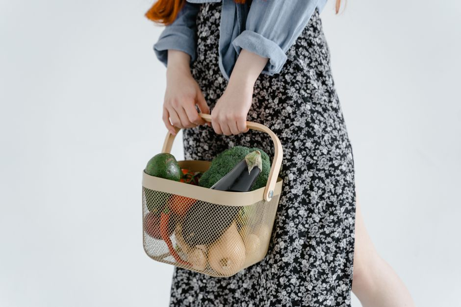

Maneras de cocinar platos económicos utilizando los descuentos y promociones
Para los estudiantes que buscan mantenerse económicamente saludables, cocinar con los descuentos y promociones es una excelente manera de ahorrar dinero sin sacrificar la calidad de los alimentos. En esta guía, te presentaremos 8 técnicas prácticas y concretas para aprovechar los descuentos y promociones al cocinar de manera económica.
Photo: RDNE Stock project / Pexels
1. Planificación de la compra semanal
Antes de ir a la tienda, haz un plan de compras para la semana. Esto te ayudará a evitar comprar cosas innecesarias y a aprovechar las ofertas. Por ejemplo, si la tienda ofrece 20% de descuento en verduras, planifícalas en tu menú semanal.
2. Compras en grandes cantidades

Photo: Tima Miroshnichenko / Pexels
Si la tienda ofrece descuentos por compra en grandes cantidades, considera comprar en volumen. Por ejemplo, si compras 5 kg de espinacas por 10 euros, esto puede representar un ahorro significativo en comparación con comprar 1 kg por 2.50 euros.
3. Utiliza el código promocional
Antes de pagar, asegúrate de utilizar los códigos promocionales disponibles. Muchas tiendas y supermercados ofrecen códigos descuentos por registro o por compra en línea. Por ejemplo, si un supermercado ofrece un 15% de descuento al registrarte en su app, no lo dudes.
4. Compra productos de temporada
Los productos de temporada suelen estar disponibles a precios más bajos. Por ejemplo, si en el otoño hay ofertas en frutas como las peras, aprovecha la ocasión para comprar en grandes cantidades y prepara postres con ellas.
5. Cocina en masas
Cocinar en masas puede ahorrar tiempo y dinero. Por ejemplo, si el supermercado ofrece un descuento en pollo entero, compra uno y cocina varias porciones. Puedes preparar ensaladas, sándwiches y sopas con los restos.
6. Utiliza la congelación
Además de comprar en grandes cantidades, también puedes congelar los excedentes. Esto te permitirá usar ingredientes frescos durante todo el mes y ahorrar en compras semanales. Por ejemplo, si compras un pollo entero, congela las piezas que no usas en el primer mes y cóguelo en porciones más pequeñas.
7. Cocina en el horario de ofertas
Muchos supermercados ofrecen descuentos en ciertas horas del día. Si puedes, intenta comprar durante esas horas para ahorrar dinero. Por ejemplo, si la tienda ofrece un 20% de descuento de 17:00 a 19:00, aprovecha ese horario para tus compras.
8. Prepara en lote y congela
Finalmente, prepara en lotes y congela los platos. Esto te permitirá tener comidas listas para calentar en el microondas durante toda la semana. Por ejemplo, puedes preparar una gran porción de pasta bolognese y congelarla en porciones para cocinar en 20 minutos cada día.
En resumen, la clave para cocinar de manera económica es planificar, aprovechar las ofertas y comprar con propósito. Con un poco de organización y creatividad, puedes mantener una dieta equilibrada y asequible. ¡Feliz cocina!